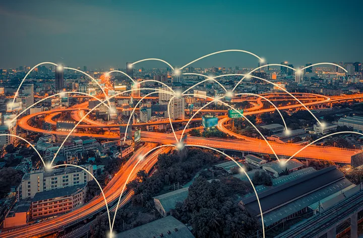

Akıllı Teknolojilerin Yükselişi: Nesnelerin İnterneti
Günümüzde dijital dünyanın evrimiyle birlikte nesneler arası iletişim ağları günlük yaşantımıza
daha da entegre oluyor. Nesnelerin İnterneti (IoT) sadece bilgisayarlarımızı ve telefonlarımızı değil,
aynı zamanda ev aletlerimizden endüstriyel makinelerimize kadar birçok nesneyi birbirine bağlayan bir
dönüşümü temsil ediyor. IoT; nesnelerin akıllı hale gelmesini, veri toplamasını ve paylaşmasını sağlayarak
hayatımızı daha verimli ve bağlantılı hale getiriyor.
Peki, bu büyüleyici dünyanın içine biraz daha yakından
bakmaya ne dersin?

Nesnelerin İnterneti dediğimiz kavramın ne olduğunu anlamakla başlayalım. Teknolojinin gelişmesi, internetin
yaygınlaşması ile iyice hayatımıza girmeye başlamış olan Nesnelerin İnterneti (Internet of Things), nesnelerin
kendi aralarında veya bulut yardımıyla çeşitli sistemlerle etkileşim halinde olduğu internet ağına verilen addır.
Nesnelerin interneti, gündelik kullanılan nesneleri internete bağlayarak iletişimi sağlar. Sensörler ve yazılımla
beraber sistemin içerisinde gömülü bir şekilde bulunur. Fiziksel dünyadan topladığı verilerin bilgisayarlar tarafından
işlenebilmesi için veriler elektriksel sinyallere dönüştürülür.
Nesnelerin interneti aslında bir sistem oluşturmaktadır.
Nesneler internet altyapısı ile birbiriyle iletişimde bulunurlar ve bu nesnelerin birleşmesi ile sistem oluşur. Bu sistemin
içerisinde akıllı cihazlar, IoT uygulaması ve grafik kullanıcı arabirimi bulunur. Bunları inceleyecek olursak:
- Akıllı cihazlar, bir ağa veya internete bağlanan, diğer bağlantılı cihazlarla veya bir merkezle bağlantısı olan ve veri toplayan cihazlardır. Bu cihazlar sadece akıllı TV ya da akıllı saatlerle sınırlı değildir. Bir ağa bağlanan çamaşır makinesi, yazıcılar da akıllı cihaz olarak adlandırılır.
- IoT uygulaması, cihazlardan alınan verilerin işlendiği yazılımın bütününe denir. Burada verileri analiz etmek için yapay zekâ teknolojisinden yararlanılır.
- Bu cihazları denetlemek için kullanılan bir kullanıcı arabirimi tasarlanır. Bu bir web sayfası veya bir mobil uygulama olabilir.
Bu sistemin asıl amacı sistemlerin iletişimi ile sensörlerden toplanan verilerin anlamlandırılması ve günlük hayatın işleyişinde yarar sağlamak, insanların hayat kalitesini ve verimliliğini artırmak üzerinedir. Burada toplanan verilerin fazlalığı sebebiyle büyük veri kavramı, verilerin anlamlandırılmasında ise yapay zekâ kavramı işin içine girmektedir. Ayrıca cihazların bulut ile iletişimini sağladığından bulut teknolojisi de işin içine girmektedir. Bu bulut teknolojisinin genel kullanıma açık olması gerekmektedir. Bu şekilde bakıldığında nesnelerin interneti çeşitli alanlarla etkileşim halindedir.
Nedir Peki Bu Nesne Dediğimiz Kavram?
Burada nesne dediğimiz kavram geniş bir kapsama alanına sahip olsa da bazı şartları vardır. Örneğin bu nesnenin bağlanabilir olması (WiFi veya bluetooth gibi), kendine has bir isminin olması (kendine ait bir adres yani IP’sinin olması) ve sensörünün olması gerekmektedir. Burada bahsettiğimiz kendine ait bir isminin olması, günümüzde hızla tükenen IPv4 adresleri nedeniyle sıkıntı yaratacak gibi gözüküyor. Ancak bu sorun IPv4’ün yerini yavaşça IPv6’ya bırakıyor olması ile çözülebilecek bir sorundur. Kısaca açıklayacak olursam IPv4, internet protokolünün dördüncü versiyonudur ve 32 bitlik adreslerden oluşur. IPv6 ise 128 bitlik adresler kullanır. Bu da çok daha fazla adres ve çok daha fazla eşsiz isim demektir. Şu anda yaygın olarak IPv4 ile adreslenen cihazlar kullanılsa da yerini yavaş yavaş IPv6’ya bırakacağı öngörülüyor.
Nesnelerin İnternetinin Kapsama Alanı
Başlangıçta akıllı ev, akıllı araç, akıllı trafik, akıllı fabrika gibi kısıtlı alanlar için düşünülse de zamanla akıllı şehir,
akıllı çevre gibi genelleşmeye başlamıştır. Akıllı şehir ve akıllı çevre uygulamaları nesnelerin interneti ile ortaya çıkan
çok geniş bir kavram olmakla birlikte; trafik sıkışıklığının önlenmesi, ışık kirliliğinin azaltılması, atık yönetiminin
iyileştirilmesi, su kirliliğinin azaltılması gibi önemli durumlarda yardımcı olma kapasitesine sahiptir.
Endüstriyel IoT
(IIoT) ise günümüzde dördüncü endüstri devrimi olan Endüstri 4.0’ı temsil eder. Endüstriyel IoT özellikle imalat, enerji santralleri,
tarım, petrol ve gaz gibi endüstriyel uygulamalarını odak noktasına alır. İnternete bağlı makineler ile bu makinelerin ürettiği
verileri anlamlandırarak kurumların verimliliğini artırır, çevre kirliliğini önler ve daha verimli kaynak kullanımı ile ekonomik
anlamda destek sağlar.
Nesnelerin İnternetinde Güvenlik
İnternetin yoğun kullanımı ve geniş bir alanı kapsayan her teknolojide güvenlik sorunlarını da düşünmek gerekiyor. IoT güvenliğini sağlamak için alınması gereken bazı önlemlere değinelim.
- IoT cihazları veri toplamadan önce veya veriyi başka bir yere iletmeden önce kimlik doğrulaması yapılması istenebilir.
- Veriler belli boyutlarda paketlenebilir ve bu paketler güvenlik duvarları ile korunabilir.
- Cihazların güvenliği sağlanırken cihaz ile ağ güvenliğinin ve ağ ile iletişim altyapısının güvenliği kontrol edilebilir.
- Cihazların yazılım güncellemelerini düzenli yapılmalıdır. Zamanında güncelleme yapılmayan cihazlar sistem açığına sebep olabilir.
- İki faktörlü kimlik doğrulaması kullanılmalıdır.
- Ağ daha küçük bir alanla sınırlanmalıdır. Böylece kontrol etmesi ve koruması daha kolay olacaktır.
Gelecekte IoT Teknolojisini Neler Bekliyor?
Cihazlarla iç içe olan her sektör bu teknolojiden etkilenecek ve gelişecektir. Örneğin sağlık sektörü için ameliyatlarda yapılan hataların azalması, hastaların durumunun daha rahat izlenmesi, verilerin anlamlandırılması ile yeni sağlık modelleri gelişecek olması öngörülmektedir. Fabrikaların IoT destekleyen cihazlarla donatılacak olması ile daha verimli fabrikaların kurulacağı düşünülmektedir. Trafikte kullanım sayesinde trafik kazaları ve dolayısıyla kazalardan dolayı oluşan yaralı ve ölü sayıları azalacaktır. Yenilenebilir enerjinin kullanımı artacaktır ve bu sayede çevre kirliliği azalacaktır. Akıllı tarım kavramı hayatımıza girecek ve tarımdan alınan verim artırılacaktır.
Okuduğunuz için teşekkür ederim, umarım faydalı bir yazı olmuştur. Başka satırlarda tekrar görüşmek dileğiyle ✍🏻